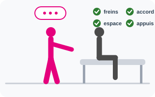
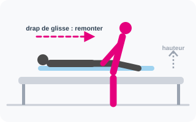
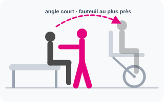
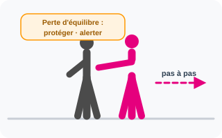
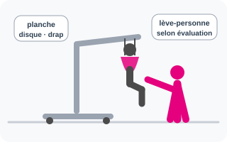

Règle de conduite commune
Chaque atelier suit la même séquence : observer, expliquer, préparer l’espace et le matériel, mobiliser avec la personne, contrôler le résultat puis analyser. Le formateur adapte l’exercice aux équipements effectivement présents et aux procédures de l’établissement.
Limite : aucune démonstration ne justifie un forçage, un maintien douloureux ou une prise de risque. Toute douleur, instabilité, incompréhension ou absence d’appui suffisant impose d’arrêter et de réévaluer la solution.
Atelier 1 · Préparer une mobilisation
- Recueillir l’accord et expliquer l’action.
- Observer l’état, les douleurs, l’équilibre et les capacités d’appui.
- Vérifier l’environnement, les freins, les obstacles et l’accessibilité du matériel.
- Décider : seul, à deux ou avec une aide technique.

Atelier 2 · Mobilisation au lit
- Repositionnement et changement de position.
- Remontée au lit avec le dispositif de glisse adapté.
- Retournement et installation confortable.
- Passage de la position allongée à la position assise.

Atelier 3 · Transferts
- Lit vers fauteuil puis fauteuil vers lit.
- Fauteuil vers chaise.
- Assis vers debout puis debout vers assis.
- Analyse des appuis, de la distance, de l’angle de transfert et de la participation possible.

Atelier 4 · Accompagnement à la mobilité
- Aide au lever et accompagnement de la marche.
- Sécurisation des appuis et du cheminement.
- Réaction face à une perte d’équilibre : protéger, alerter, ne pas retenir par la force.

Atelier 5 · Aides techniques
- Identifier l’aide utile : dispositif de glisse, planche, disque, ceinture, fauteuil, verticalisateur ou lève-personne.
- Contrôler la disponibilité, l’état et les conditions d’utilisation de l’équipement.
- Réaliser l’action conformément à la notice et aux procédures de l’établissement.

Évaluation pratique finale
Le formateur observe une mise en situation à partir d’un scénario simple. Les critères sont : analyse préalable, communication, choix de la méthode et des aides, positionnement, sécurité du patient et du professionnel, respect de la dignité, capacité à demander un renfort si nécessaire.